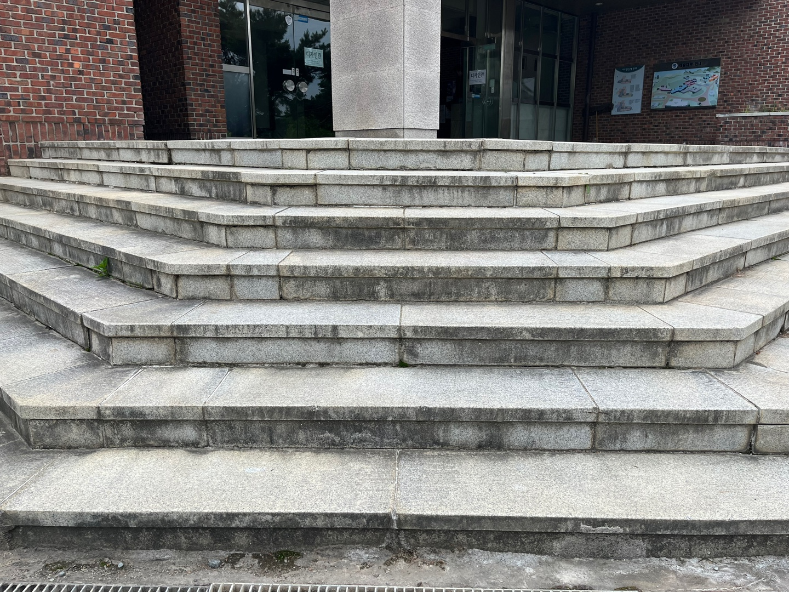
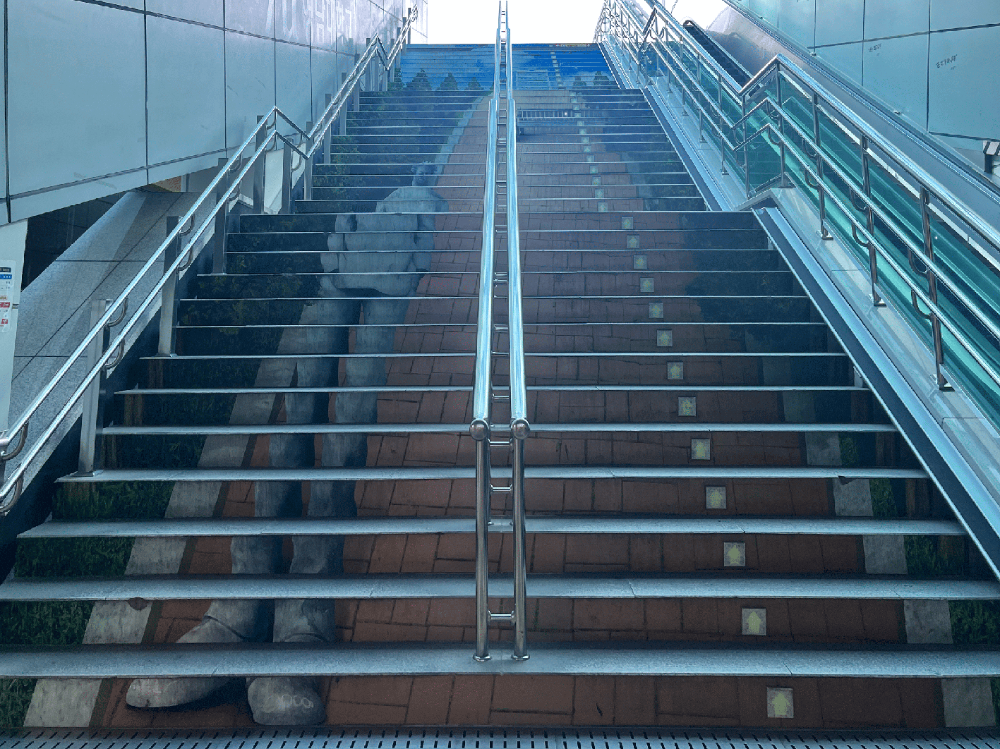

직선 계단


특징
구조적으로 단순하고 시공이 쉬움.
용도
일반 가정, 아파트, 상가 건물, 공장 등 다양한 건축물에서 사용.
공간이 직선으로 확보될 때 유리함.
장점
설계 및 시공이 간편하고 비용 효율적.
이동 경로가 명확해 사용자에게 익숙함.
난간, 손잡이 설치가 쉽고 청소나 유지보수가 간편.
단점
수직으로 공간을 많이 차지함.
길이가 길어질수록 휴식 구간이 없어 피로할 수 있음.
건물 구조상 직선 공간이 필요하므로 배치 유연성 낮음.
-->